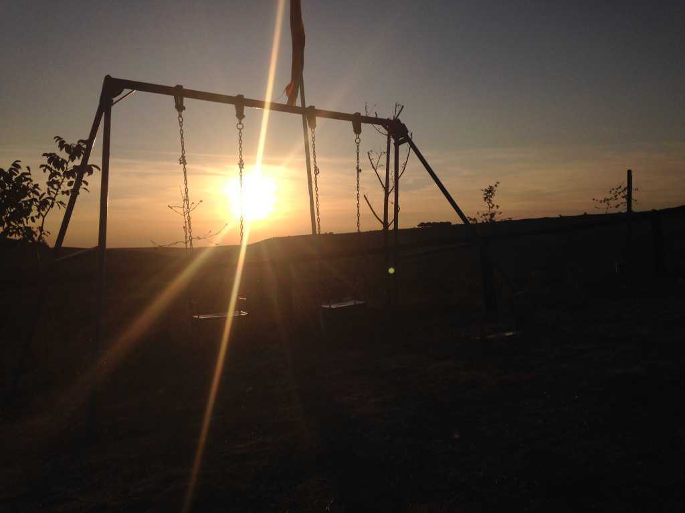

8: Gone
I’ve sunken into the depths of an all-too-familiar melancholy.
She is gone. I am alone. My emotions swing to the erratic cadence of an unforgiving metronome.
I miss the jade of her eyes, those luminescent opals I so often lose myself in. The ease of her smile, always able to bring about my own. The way she plucked those juicy blackberries from their thorny brambles, always a tad out of reach, the hem of her shirt lifting ever so slightly in the process, revealing the contours of a titillating landscape I secretly wished to explore.
I miss her laugh, her presence, the way she made me feel: Whole. Complete. Loved. I miss my Camino soulmate.
Absence: the presence of nothingness. A paradoxical, palpable emptiness. A space defined by its non-existence. A torturous conundrum that slowly gnaws away the seam of my mind. A universe without incandescence.
Stepan has decided to stay another night in Burgos. He’s not taking the leave well.
I, on the other hand, have to go. I have to keep walking.
The sky reflects my mood – gray, somber, displaced. I walk through a park between a row of trees. A runner waves at me and says, “Buen Camino!” I force a smile and wave back.
I’m lost – the hostel we stayed at was located somewhere deep within the city, far from the familiar path of the Camino. I need to find a yellow arrow.
Surprisingly, Google Maps leads me back on track. I spot a yellow arrow on a blue signpost pointing towards a stone bridge. A group of Spanish schoolchildren are crossing. I follow. They turn and smile at me. “Un peregrino!” This time an unforced grin wiggles its way to my lips. What I would do to be a child right now: they are experts at being present and letting go of things.
The past 15 days I have walked with another. Now she’s gone.
A remnant of what was, a reminder of what isn’t.
I walk.
At the western edge of Burgos, I feel the presence of someone following me. I turn back and spot an older man trailing me not far behind. Some minutes later he appears at my shoulder, decelerates, and matches my pace.
“Ah, hello. You are young.”
“No I’m Phil.”
He doesn’t get the joke.
He wouldn’t let me mope alone – we walk together for the next 2 hours. He’s a Korean Catholic priest on sabbatical. We proceed to talk about religion, the Camino, life. It’s refreshing to hear another voice, to have a moment of mental relief. Somehow he notices the concern I’m carrying and asks why I’ve decided to walk.
“I’m not sure anymore. I guess I was looking for a purpose, but I don’t even know if I believe in such a thing, as if such a thing existed out there. Yet I feel like I have been going through life on a path that is not my own. Also, my best friend just left. We had been walking together for the past 2 weeks, and now she’s gone.”
That must be hard… Okay. let me ask you something: What are the most important things in your life?
“…I… I don’t know.” I felt ashamed for not knowing, but he reassured me:
Don’t worry. Most people have answers right away. But they haven’t thought about why; Why are those things important? It’s ok not to know. What makes you excited and happy?
“Well… right now, walking. And I’m enjoying my conversation with you. I like to learn. I like to travel and meet people. Anything that makes me feel alive.”
Why?
“Ok, I see where you’re going with this.”
It’s ok not to know. You don’t have to know where you’re going, you just have to keep going. And as long as you ask Why, you will go where you need to be. You might be searching for a clear answer, but it’s ok if you don’t find one by the end of your journey. Just keep asking Why, and be open to whatever comes.
As a child, I had the calling to become a priest. But I decided to go to university and studied architecture instead. I designed buildings - big ones, ah! - for almost 15 years. I thought it was what I wanted to do with my life. But something inside me told me it wasn’t. That was my heart speaking. It was still saying I had to become a priest. So I listened, and here I am! Ha ha.
“But I don’t have a calling.”
But you do. Callings! You just need to listen. Listen to your heart.
We go on like this for awhile.
Phil, can we take a picture together?
He took out his phone and snaps a selfie of us.
I will always remember you.
He laughs, quickens his pace, and walks off into the distance.
I never see him again.
34 kilometers later I arrive in Hontanas. I check myself in, unpack, shower, and cook a light dinner. I wander around town for a bit, then go inside the church and sit in silence. I thought the presence of God would help me fill the void, but it didn’t. He doesn’t help non-believers, despite his supposed benevolence.
I leave and clamber up a narrow flight of stairs behind the albergue. At the top is a swing-set and what looks like an abandoned bar. I continue upward toward the top of the hill until the people below are nothing more than ants. Barren hilltops and stretched clouds pressed against the distance. The sun is beginning its daily descent.
Why do I feel this way? I thought I could let her go. I thought I had accepted what was. Yesterday I was fine, today I’m not. What happened? Is this what it feels like to let go of something, someone you love? Do I though? Do I really love her?
I begin to vocalize my thoughts by talking to the sky, as if someone was listening to my grievances.
I accept it. Yes, I miss her. Maybe I do love her. I don’t know. What is love anyways? It’s so cliche. Boy meets girl in Spain. Falls in love. She flies away. And he lies to himself, tells himself he’s ok. He’s not… I miss her.
A weight lifts as I shout into space. I laugh and imagine M at my side, laughing with me, telling me how crazy of a person I am for talking to myself, shouting at nothing but the sun and clouds. But I knew she would understand.
A latch releases. Gratitude, clarity, stillness, tears.
The sky is poppy red, M’s favorite flower and color, a deep and radiant crimson.
The journey has only just begun.
